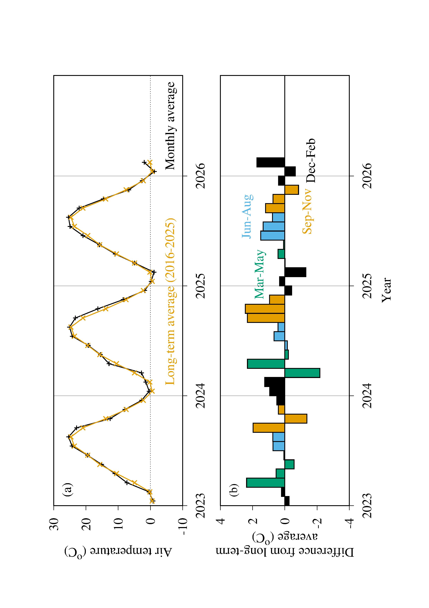

信州大学 理学部 理学科 物質循環学コース
微気象学研究室 (Laboratory of Micrometeorology)
諏訪の気象
- 2025年秋：前半は近年の平均よりも気温が0.7℃から1.2℃高めでしたが，11月は0.9℃ほど低めでした．
- 2025年冬：12月は近年の平均よりも気温が0.4℃高めでしたが，2026年1月は気温が0.8℃ほど低めでした．その後、2月は気温が1.7℃高かったです．
- 2026年春：3月の気温は近年の平均程度でしたが，4月の気温は1.5℃ほど高かったです．5月は近年の平均よりも0.8℃程度気温が高かったです．
- 2026年夏：6月の気温は近年の平均よりも0.5℃低かったです．

図の説明：(a) 諏訪で測定された気温．黒線が各年の月平均気温，橙線が長期平均した月平均気温．
(b) 各年の月平均気温と長期平均との差．上のパネルの二本の線の差を示している．黒が12月から2月，
緑が3月から5月，青が6月から8月，橙が9月から11月．